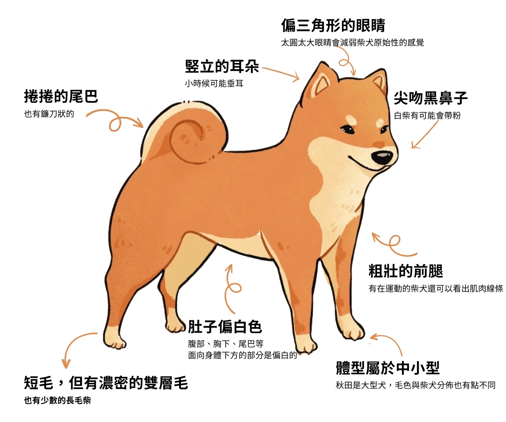

柴犬面貌與秋田犬相似，也因此兩者經常被搞混。細分的話，秋田臉較柴犬圓，柴犬的耳朵與嘴較秋田尖，不過兩者最明顯的差別是體型，柴犬比秋田明顯嬌小可愛。 柴犬的特徵包括短毛、豎耳、捲尾等。屬中型犬，具有良好發展的肌肉。公犬計算至肩隆的身高約為38－41公分，母犬則為35－38公分。中等身形的公柴犬平均體重約為9公斤，母柴犬則約為8公斤。體重內的骨頭占比適中。
柴犬天性較為大膽、獨立，同時也有頑固一面。有些柴犬警戒心較強，也有些柴犬對人類較為友好，但基本上與日本犬的個性相同。柴犬對於主人或其認可的人類較為忠誠，由於柴犬在古代是作為追緝獵物的獵犬使用，因此通常具有一定警戒心與攻擊性，一般來說，母柴犬的攻擊性比公柴犬來得較為兇猛。柴犬與貓比較容易和平相處。